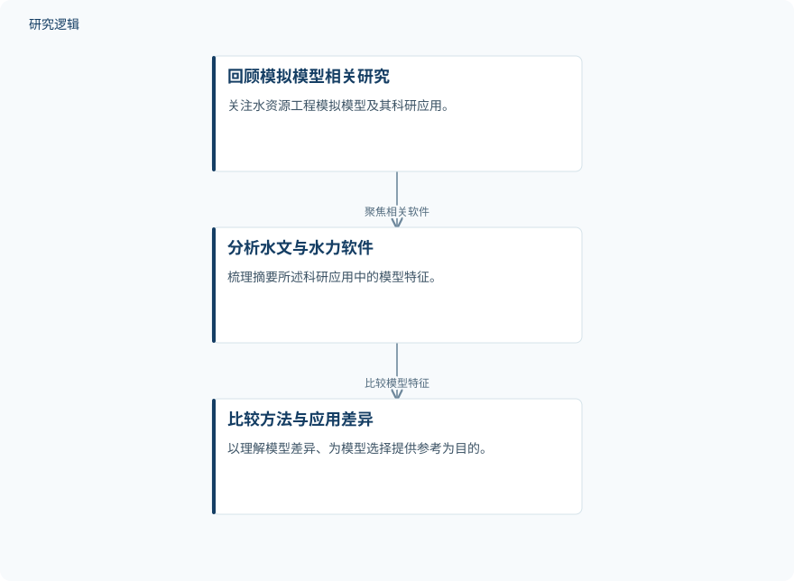

摘要解读
基于机器学习的无人机结构铝合金与钛合金性能分析
Analysis of the Performance of Aluminum and Titanium Alloys in Unmanned Aerial Vehicle (UAV) Structures Using Machine Learning Models
解读更新 2026-10-21 12:31 · 依据公开摘要整理，未核验全文细节
无人机结构选材如何兼顾力学性能、疲劳表现与工程可用性？这项研究将铝合金和钛合金的多源材料信息纳入机器学习分析，阅读价值在于理解多属性选材的建模思路，而非直接获得某种合金的优劣排名。
文章目录
无人机选材需要同时考虑哪些属性
研究将无人机结构材料选择视为复杂的多准则问题，关注物理、力学、疲劳及使用相关属性。作者选择铝合金和钛合金，是因为这些材料经常用于无人机系统，希望由此建立具有工程关联性的数据基础。
从多源材料信息到机器学习分析
数据集汇集实验报告中的数值与可靠文献来源，材料描述涵盖密度、杨氏模量、屈服强度、极限抗拉强度、疲劳强度、疲劳寿命、硬度、耐腐蚀性、可焊性、成本等级和可获得性。这里的“实验报告值”指数据来源，不能据此理解为作者重新开展了这些材料试验。
机器学习模型同时考虑定量与定性参数，用于分析设计需求之间的非线性相互作用。摘要明确了数据整合与多属性建模的思路，但没有给出具体算法、预测目标、定性指标编码方式或训练流程。
依据摘要整理的多属性选材分析示意


仅概括摘要明确描述的数据汇集与建模关系，不代表论文原图，也不补充未报告的算法或验证步骤。
下载 SVG图示关系说明
实线表示相邻阶段的信息流，虚线表示跨阶段联系或反馈。
实验报告与文献来源 → 多属性材料数据集：多源信息整合；多属性材料数据集 → 机器学习分析：纳入材料属性
摘要报告了可靠性与泛化改善
作者报告，所开发的机器学习模型表现出改善的可靠性与泛化能力，并认为其对无人机结构设计和材料选择具有工程价值。不过，摘要未提供性能指标、改善幅度或对应比较对象，因此这一结果目前只能作为定性结论理解，不能转述为某种合金更优或某项性能提升已被定量证实。
数据规模、比较基准与验证范围仍待确认
仅凭摘要，无法判断样本规模、具体合金牌号、不同来源数据的可比性，以及训练与测试如何划分；也无法确认改善相对于何种基准、是否经过外部数据验证，或能否推广到特定无人机结构与服役条件。这些是当前资料的边界，不等于论文没有开展相关工作。
此外，摘要宣称每个样本包含12项属性，但随后列举的项目与这一总数并不完全对应，具体字段需进一步核对。摘要中的模型“可靠性”也不应直接等同于结构失效概率、疲劳寿命预测精度或适航层面的安全验证。
阅读启发：追问疲劳信息如何参与选材
阅读启发：对关注结构疲劳与可靠性的读者，值得进一步查看疲劳强度、疲劳寿命如何与成本、可焊性等属性共同进入模型，以及不同来源材料数据的试验条件如何处理。对结构设计读者，则可重点核对模型输出究竟支持何种选材决策，而不预先将其理解为已完成结构优化或寿命验证。
以上为本站阅读启发与建议，不是论文已验证的结论。